Exercise Solutions
Exercise: Binomial (Bernoulli) GLM - dolphin behavioural plasticity
1. It has been suggested that the patterns of use of different coastal foraging sites by dolphins can be quite variable over time. For example, sightings of bottlenose dolphins at the Sutors site, in the Moray Firth, are thought to be more frequent around May-June, although the presence of dolphins may depend on various factors, including tidal state and time of day. The goal of this exercise is to describe variation in dolphin probability of presence at Sutors, in relation to factors like tidal state, time of day and season (particularly May/June vs. rest of the year). In particular, we would like to ask if preference for certain tidal states, or times of day may change in different periods of the year, by testing possible interactions between the appropriate predictors.
The data for this exercise were collected by the Cromarty Lighthouse team between 2010 and 2016, using underwater sound recorders (CPOD) to continuously monitor the pattern of presence and foraging behaviour of bottlenose dolphins at key sites in the Moray Firth.
- Variables:
Xindex of the observationspresence: 0 for absence, 1 for presenceyearjulianday: day of the yeartideangle_deg: tidal state`mh: hour of the day (integer)mon: month (integer)Per2: Splits year into two periods (May+June vs rest of year)Per4: Splits year into 3 periods of 20 days from early May to end of June vs rest of the yearTime6: Time of day split into 6 4h periods (first centered on midnight)Tide4: Tide angle split into 4 quadrants with peaks in middle of respective bin
The data have been aggregated as presence/absence at a 1h resolution. You will focus on one of the sites, “Sutors”, a subset which will leave you with just under 5000 presence/absence records to play with. Note that “absence” refers to the absence of a detection within each hour, not necessarily to the absence of dolphins. We can ignore this in the analysis, but we should keep it in mind when interpreting the results.
Background to the data and the study can be found here, courtesy of Paul Thompson. The exercise can be done entirely without consulting this. I recommend you watch this or any companion material (the referenced paper) outside the synchronous session, to make the most of the time you have with demonstrators to progress on the exercises.
As in previous exercises, either create a new R script (perhaps call it GLM_PresAbs) or continue with your previous R script in your RStudio Project. Again, make sure you include any metadata you feel is appropriate (title, description of task, date of creation etc) and don’t forget to comment out your metadata with a # at the beginning of the line.
2. Import the data file ‘dolphin.csv’ into R by running the following chunk of code (please unfold the code chunk and copy/paste).
dat<- read.csv("./data/dolphin.csv", stringsAsFactors= T)
# re-ordering factor levels for convenience:
dat$Per2<- factor(dat$Per2, levels= c("RestOfYear", "MayJun"))
# (making "RestOfYear" the reference level)
dat$Per4<- factor(dat$Per4, levels= c("RestOfYear", "MayJun1", "MayJun2", "MayJun3"))
dat$Time6<- factor(dat$Time6, levels= c("MNight", "AM1", "AM2", "MDay", "PM1", "PM2"))
# reordering chronologically
str(dat)## 'data.frame': 5000 obs. of 11 variables:
## $ X : int 31458 14027 40551 40456 15894 13109 23797 6053 23445 34584 ...
## $ presence : int 0 1 0 0 1 0 0 0 0 0 ...
## $ year : int 2014 2011 2015 2015 2011 2011 2013 2010 2012 2014 ...
## $ julianday : int 59 226 80 76 312 188 102 256 327 192 ...
## $ tideangle_deg: int 247 356 176 299 127 75 44 73 180 103 ...
## $ mh : int 8 13 7 8 3 7 3 6 14 15 ...
## $ mon : int 2 8 3 3 11 7 4 9 11 7 ...
## $ Per2 : Factor w/ 2 levels "RestOfYear","MayJun": 1 1 1 1 1 1 1 1 1 1 ...
## $ Per4 : Factor w/ 4 levels "RestOfYear","MayJun1",..: 1 1 1 1 1 1 1 1 1 1 ...
## $ Time6 : Factor w/ 6 levels "MNight","AM1",..: 3 4 3 3 2 3 2 2 4 5 ...
## $ Tide4 : int 4 1 3 4 2 2 1 2 3 2 ...
3. Take a look at the structure of this dataframe. Start with an initial data exploration to look at any imbalance between the predictors, and factors affecting presence of dolphins. Which ones are continuous or categorical? Which ones would your intuition suggest you to use for data exploration? For modelling?
- Hints:
- Presence/absence data (Bernoulli) are more difficult to explore than other types.
- One approach is to count observations per categories of interest.
table()is a useful way to count the number of observations per category or combinations of categories, e.g.ObsPerMonthYear<- table(dat$year, dat$mon)plot(ObsPerMonthYear)returns a “mosaic plot” where the area of each rectangle is proportional to the count.- For proportion of time present, you could calculate mean presence per category
bla<- tapply(dat$presence, list(dat$GroupOfInterest), mean) - and plot this using
plot(bla, type= "b", ylim= c(0, 1), xlab= "GroupOfInterest", ylab= "presence") - In more than one dimension,
matplot(tapply(dat$presence, list(dat$Group1, dat$Group2), mean), type= "l", ylim= c(0, 1), xlab= "Group1", ylab= "presence", lty= 1)produces one line per category in Group2.
# count observations per year/month combination and represent as mosaicplot
plot(table(dat$year, dat$mon))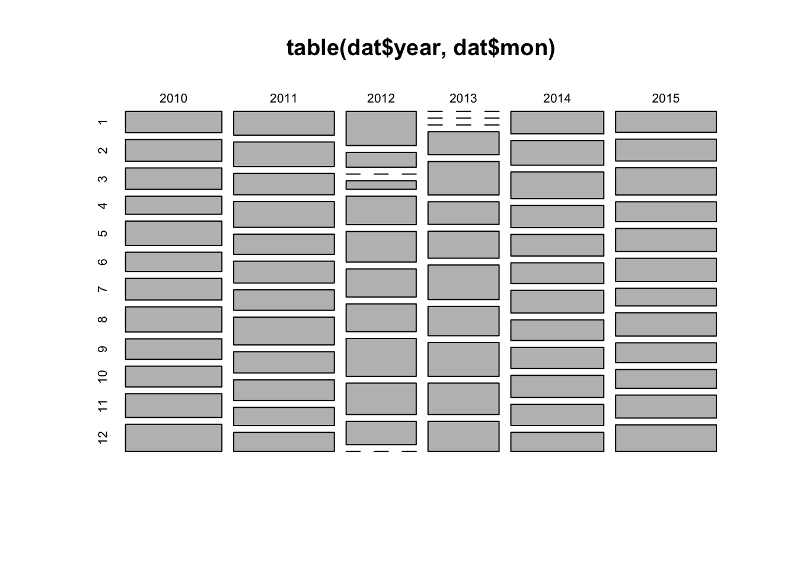
# CPOD failure in Feb-April 2012 and Dec 2012-March 2013
plot(table(dat$mh))
# fairly even representation of hours
# (that's on the random sample; Almost perfectly balanced on the full dataset)
plot(table(dat$Tide4, dat$mh))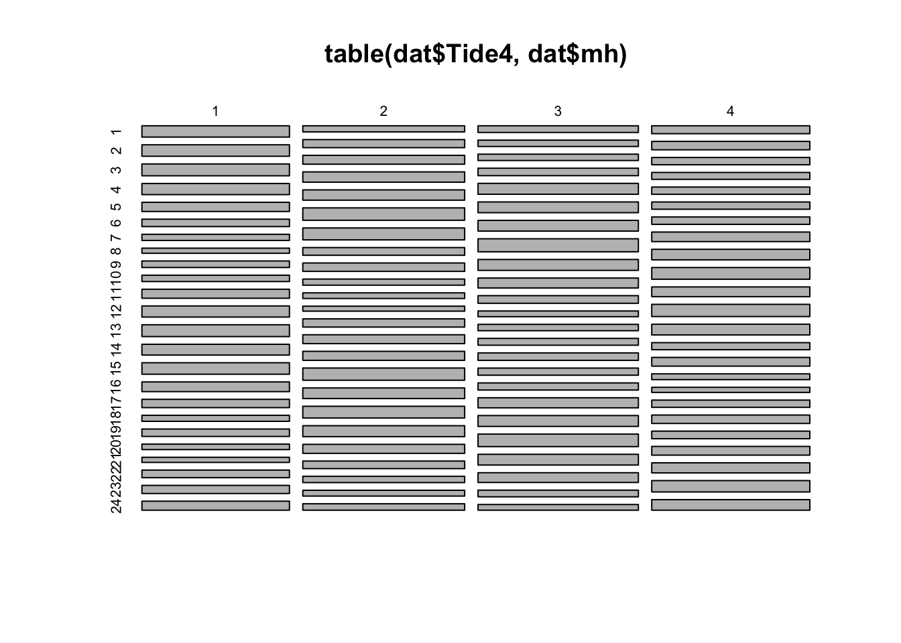
# even representation of tides
# time of day and tidal phase not independent (but not a linear correlation)
# presence in relation to time of day
plot(tapply(dat$presence, list(dat$mh), mean), type= "l", ylim= c(0, 1),
xlab= "time of day", ylab= "proportion of hours present")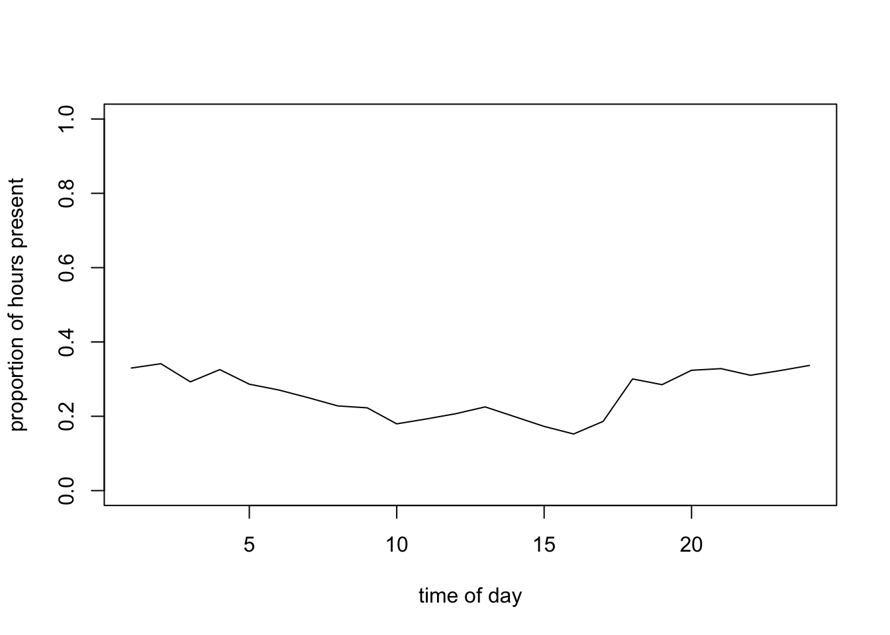
# are seasonal patterns similar between years?
matplot(tapply(dat$presence, list(dat$mon, dat$year), mean), type= "l",
ylim= c(0, 1), xlab= "month", ylab= "proportion of hours present")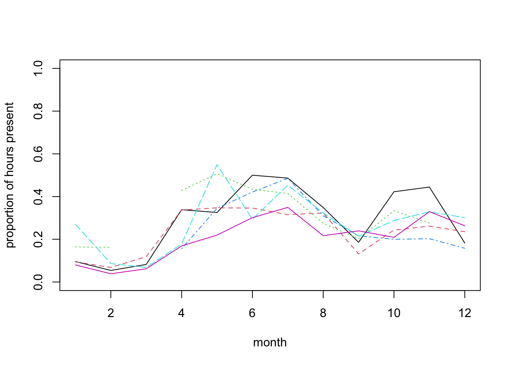
# Presence in relation to tide
plot(tapply(dat$presence, list(dat$Tide4), mean), type= "b", ylim= c(0, 1),
xlab= "tidal phase",
ylab= "proportion of hours present")
matplot(tapply(dat$presence, list(dat$mon, dat$Tide4), mean), type= "l",
ylim= c(0, 1),
xlab= "month", ylab= "proportion of hours present", lty= 1)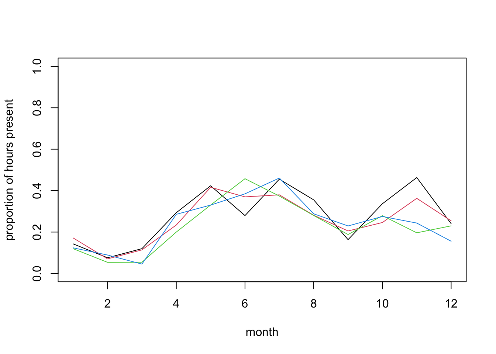
# no change in pattern of tide use across seasons
# Seasonal variation in diel pattern
matplot(tapply(dat$presence, list(dat$mon, dat$Time6), mean), type= "l",
ylim= c(0, 1),
xlab= "month", ylab= "proportion of hours present", lty= 1)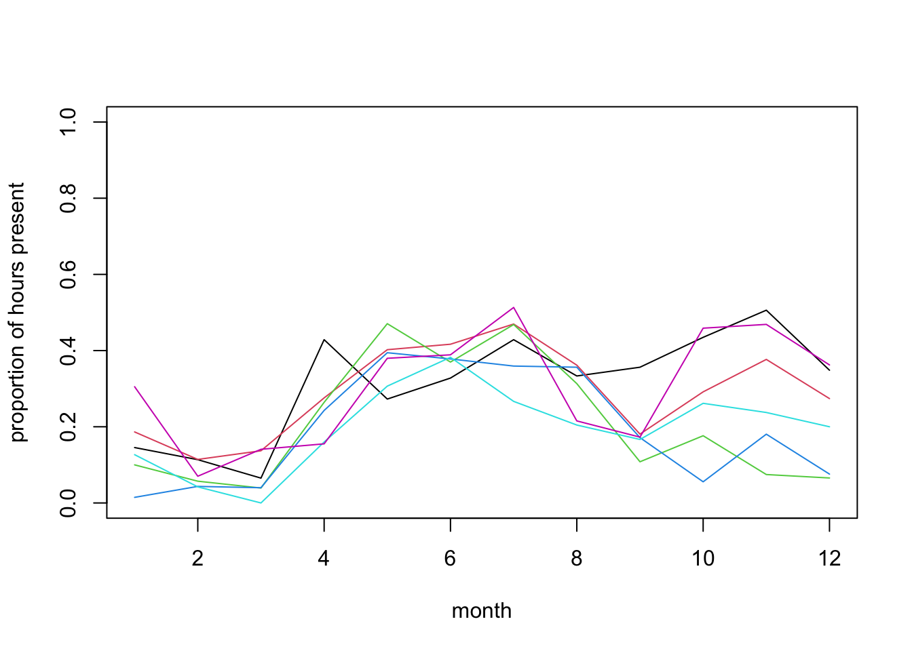
# stronger diel pattern in later part of the year
# Variation in diel pattern between May-June (red) and the rest of the year
matplot(tapply(dat$presence, list(dat$mh, dat$Per2), mean), type= "l",
ylim= c(0, 1),
xlab= "time of day", ylab= "proportion of hours present", lty= 1)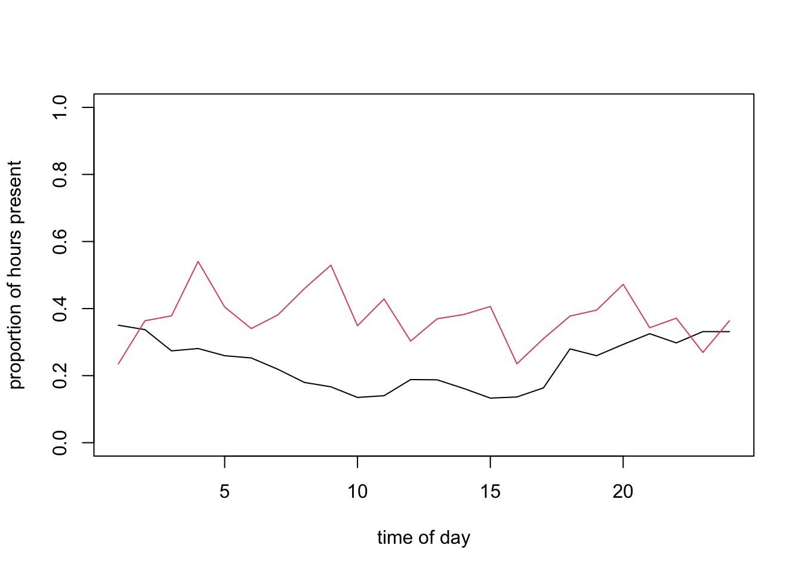
# less nocturnal in spring?
# with more categories in spring
matplot(tapply(dat$presence, list(dat$mh, dat$Per4), mean), type= "l",
ylim= c(0, 1),
xlab= "time of day", ylab= "proportion of hours present", lty= 1)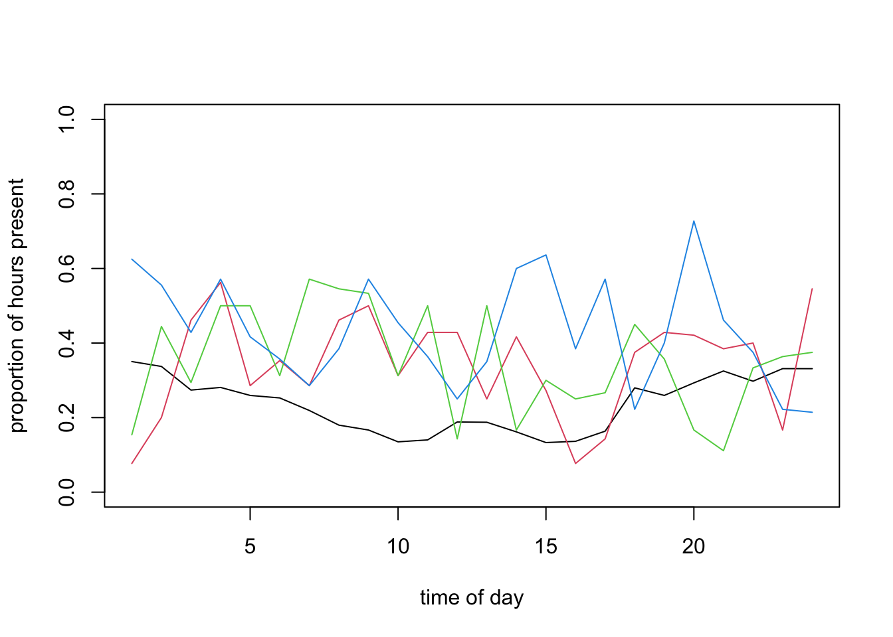
# no obvious systematic difference between the 3 portions of May-June
4. Let’s warm-up with a Binomial (Bernoulli) GLM (using glm() and the appropriate family argument) with numerical time of day, tide angle and day of the year as predictors: tideangle_deg + mh + julianday. This model doesn’t fully address the study goals stated above, but is easier to get our head around and looks at what may or may not work as a modelling approach.
PA1<- glm(presence ~ tideangle_deg + mh + julianday, family= binomial, data= dat)
5. Obtain summaries of the model output using the summary() function. Make sure you understand the mathematical and biological interpretation of the model, by writing down the complete model on paper (with distribution and link function). What biological hypothesis does each term imply, qualitatively?
summary(PA1)
##
## Call:
## glm(formula = presence ~ tideangle_deg + mh + julianday, family = binomial,
## data = dat)
##
## Deviance Residuals:
## Min 1Q Median 3Q Max
## -0.9415 -0.8169 -0.7209 1.4783 1.8553
##
## Coefficients:
## Estimate Std. Error z value Pr(>|z|)
## (Intercept) -1.4029082 0.1067073 -13.147 < 2e-16 ***
## tideangle_deg -0.0004407 0.0003172 -1.389 0.165
## mh 0.0011997 0.0047256 0.254 0.800
## julianday 0.0021864 0.0003174 6.889 5.63e-12 ***
## ---
## Signif. codes: 0 '***' 0.001 '**' 0.01 '*' 0.05 '.' 0.1 ' ' 1
##
## (Dispersion parameter for binomial family taken to be 1)
##
## Null deviance: 5738.9 on 4999 degrees of freedom
## Residual deviance: 5688.4 on 4996 degrees of freedom
## AIC: 5696.4
##
## Number of Fisher Scoring iterations: 4
# Model description:
# presence ~ Bernoulli(p) or presence ~ Binomial(N= 1, p)
# log(p / (1-p)) =
# -1.40*(Intercept) - 0.00044*tideangle_deg + 0.0012*mh
# + 0.0022*julianday
# "(Intercept)" general intercept
# "tideangle_deg" main effect of tide angle. Hypothesis: there is a monotonic
# increase or decrease of the probability of presence with tidal state
# "mh" main effect of time of day
# "julianday" main effect of day of year. Hypothesis: there is a monotonic
# increase or decrease of the probability of presence with day of the year
6. Let’s now validate the model, using deviance residuals. The easiest tool is the binnedplot() in the arm package, if you can. If you are unable to install the arm package, use the “DIY” code chunk further down for an alternative to binnedplot().
library(car)
vif(PA1)
## tideangle_deg mh julianday
## 1.002136 1.001948 1.000203
# No concern.
par(mfrow= c(2, 2))
plot(PA1, col= dat$presence + 1) # red is presence, black is absence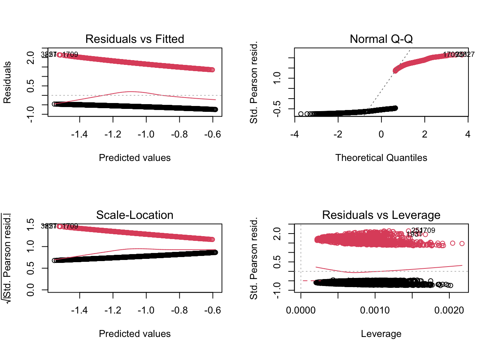
# Not very useful or pretty statistical art. Not worth framing.
# plot against predictors:
res.PA1.p<- resid(PA1, type= "pearson")
par(mfrow= c(2, 2))
plot(res.PA1.p ~ dat$tideangle_deg, col= dat$presence + 1)
plot(res.PA1.p ~ dat$mh, col= dat$presence + 1)
plot(res.PA1.p ~ dat$julianday, col= dat$presence + 1)
# Can't see anything useful.
# Use arm if you can:
library(arm)
par(mfrow= c(2, 2))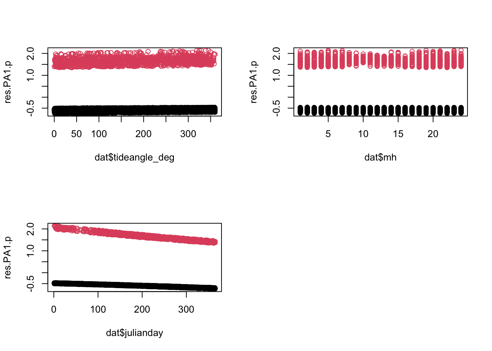
binnedplot(x= dat$tideangle_deg, y= res.PA1.p, xlab= "Tide angle", nclass= 100)
binnedplot(x= dat$mh, y= res.PA1.p, xlab= "hour")
binnedplot(x= dat$julianday, y= res.PA1.p, xlab= "Day of the year", nclass= 100)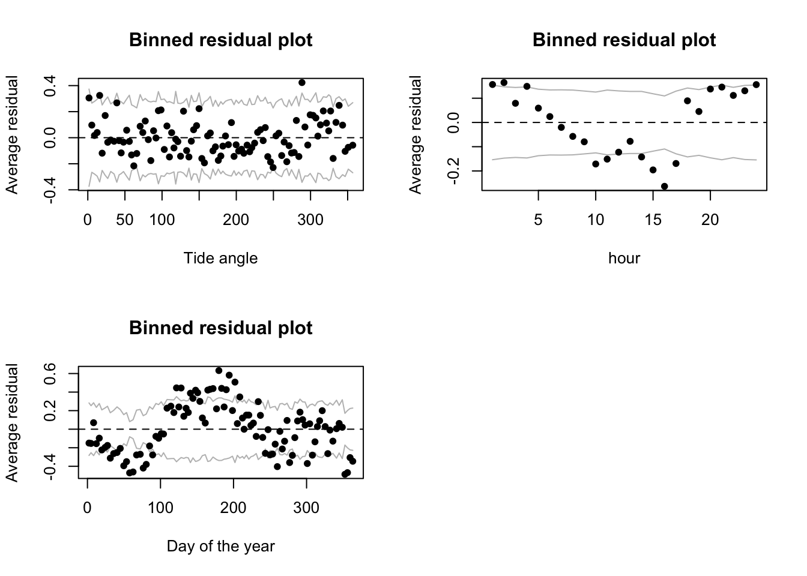
# clearly some unwanted patterns, especially in mh and julianday
# but possibly in tide angle, too
# all pointing at non-linear effects of the predictors on the response
In case needed, a home-made alternative to the binnedplot function:
par(mfrow= c(2, 2))
# plot the residuals against tideangle_deg
plot(res.PA1.p ~ dat$tideangle_deg, col= dat$presence + 1)
# get the mean of the residuals for each 1 degree bin of tideangle_deg
tide.means<- tapply(res.PA1.p, list(dat$tideangle_deg), mean)
# convert ordered bin labels into numbers (1 to 360)
tide.vals<- as.numeric(names(tide.means))
# plot residual means against bin number
lines(tide.means ~ tide.vals, col= 3)
# add horizontal line at y= 0 for reference
abline(h= 0, lty= 3, col= grey(0.5))
# same idea for hour of the day:
plot(res.PA1.p ~ dat$mh, col= dat$presence + 1)
hour.means<- tapply(res.PA1.p, list(dat$mh), mean)
lines(hour.means ~ as.numeric(names(hour.means)), col= 3)
abline(h= 0, lty= 3, col= grey(0.5))
# same for julianday:
plot(res.PA1.p ~ dat$julianday, col= dat$presence + 1)
day.means<- tapply(res.PA1.p, list(dat$julianday), mean)
lines(day.means ~ as.numeric(names(day.means)), col= 3)
abline(h= 0, lty= 3, col= grey(0.5))
# Same story.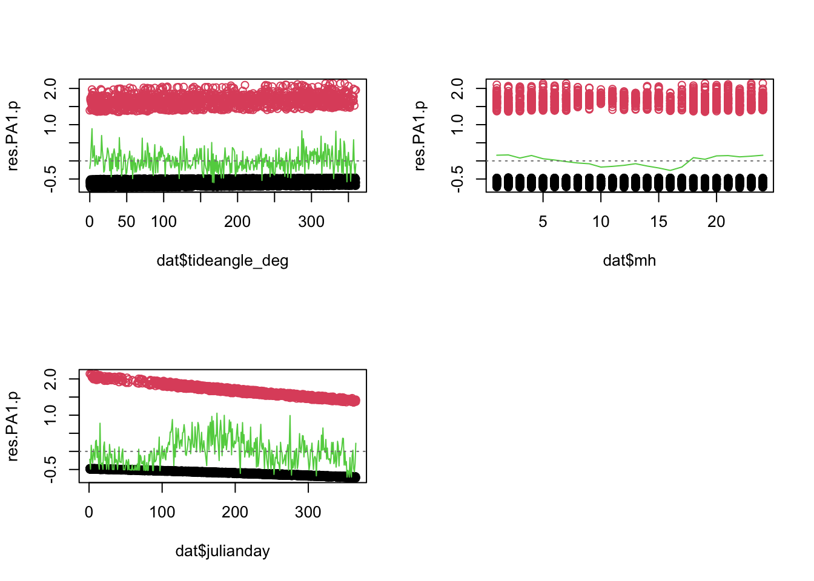
7. Are you happy with the diagnostic plots? Is there something you could do to improve the model while addressing the initial question(s)? Spend some time looking at the available predictors, and working out a solution, before unfolding the hints in the code chunk below. If you have relevant biological information, or insight from your data exploration that suggests a better approach than what is indicated below, feel free to try it for comparison.
# Please take the time to think before unfolding the next code chunk
# there are several ways the non-linearity could be addressed.
# one of the most straightforward with glm() is to discretize
# continuous predictors into bins and to treat them as factors.
# In this way, a mean is estimated per category of the variable,
# and no assumption is made about the shape of the relationship.
# Each of the predictors we started with already has one or more
# categorical counterpart in the data set.
# I suggest you try fTide4 + Per2 + Time6,
# with fTide4 being the factor version of Tide4 (needs creating).
# Then, we are also interested in interactions between these predictors.
# Some of the more biologically relevant interactions could include
# + fTide4:Per2 + fTide4:Time6 + Per2:Time6
# You can choose something else or cut the predictors into different bin
# definitions, too. Example code for this is given in the appendix at
# the end of the practical
8. Let’s move on to a Binomial (Bernoulli) GLM with some interactions of interest between numerical time of day, tide angle and day of the year as predictors: tideangle_deg + mh + julianday + tideangle_deg:mh + mh:julianday + tideangle_deg:julianday. Which individual interactions are implied in this formula? (Hint: if unsure, the summary of the model at the next question will list them).
# convert numerically coded categorical variables into factors:
dat$fTide4<- factor(dat$Tide4)
PA10<- glm(presence ~ fTide4 + Per2 + Time6 + fTide4:Per2 + fTide4:Time6 +
Per2:Time6, family= binomial, data= dat)
require(car)
vif(PA10)
## GVIF Df GVIF^(1/(2*Df))
## fTide4 1.879219e+02 3 2.393295
## Per2 9.908875e+00 1 3.147837
## Time6 1.707657e+03 5 2.104942
## fTide4:Per2 8.411752e+00 3 1.426093
## fTide4:Time6 1.023981e+05 15 1.468959
## Per2:Time6 2.386948e+01 5 1.373360
# No substantial concern.
9. Obtain summaries of the model output using the summary() function. Make sure you understand the biological hypothesis implied by each term, qualitatively.
summary(PA10)
##
## Call:
## glm(formula = presence ~ fTide4 + Per2 + Time6 + fTide4:Per2 +
## fTide4:Time6 + Per2:Time6, family = binomial, data = dat)
##
## Deviance Residuals:
## Min 1Q Median 3Q Max
## -1.1178 -0.8306 -0.6317 1.2840 2.0150
##
## Coefficients:
## Estimate Std. Error z value Pr(>|z|)
## (Intercept) -0.550121 0.144762 -3.800 0.000145 ***
## fTide42 -0.113176 0.219561 -0.515 0.606228
## fTide43 -0.456614 0.230775 -1.979 0.047859 *
## fTide44 -0.043460 0.198824 -0.219 0.826973
## Per2MayJun -0.310818 0.249043 -1.248 0.212013
## Time6AM1 -0.132944 0.202692 -0.656 0.511893
## Time6AM2 -1.113387 0.268858 -4.141 3.46e-05 ***
## Time6MDay -0.791854 0.215268 -3.678 0.000235 ***
## Time6PM1 -0.836962 0.228549 -3.662 0.000250 ***
## Time6PM2 -0.111525 0.229465 -0.486 0.626951
## fTide42:Per2MayJun 0.191680 0.229023 0.837 0.402623
## fTide43:Per2MayJun 0.365884 0.230899 1.585 0.113056
## fTide44:Per2MayJun 0.241703 0.231318 1.045 0.296072
## fTide42:Time6AM1 -0.259043 0.292915 -0.884 0.376500
## fTide43:Time6AM1 -0.095023 0.310784 -0.306 0.759794
## fTide44:Time6AM1 -0.453649 0.298137 -1.522 0.128106
## fTide42:Time6AM2 0.461708 0.350825 1.316 0.188153
## fTide43:Time6AM2 0.525719 0.354395 1.483 0.137961
## fTide44:Time6AM2 0.073392 0.340714 0.215 0.829450
## fTide42:Time6MDay -0.088102 0.326187 -0.270 0.787086
## fTide43:Time6MDay 0.207338 0.337975 0.613 0.539566
## fTide44:Time6MDay -0.503855 0.306958 -1.641 0.100706
## fTide42:Time6PM1 -0.041768 0.316273 -0.132 0.894934
## fTide43:Time6PM1 0.105802 0.342058 0.309 0.757087
## fTide44:Time6PM1 -0.080028 0.324641 -0.247 0.805285
## fTide42:Time6PM2 -0.001982 0.314309 -0.006 0.994968
## fTide43:Time6PM2 0.026013 0.318359 0.082 0.934879
## fTide44:Time6PM2 -0.181732 0.301927 -0.602 0.547237
## Per2MayJun:Time6AM1 0.799905 0.278883 2.868 0.004128 **
## Per2MayJun:Time6AM2 1.292230 0.286720 4.507 6.58e-06 ***
## Per2MayJun:Time6MDay 1.171201 0.290263 4.035 5.46e-05 ***
## Per2MayJun:Time6PM1 0.975462 0.294896 3.308 0.000940 ***
## Per2MayJun:Time6PM2 0.547160 0.283434 1.930 0.053549 .
## ---
## Signif. codes: 0 '***' 0.001 '**' 0.01 '*' 0.05 '.' 0.1 ' ' 1
##
## (Dispersion parameter for binomial family taken to be 1)
##
## Null deviance: 5738.9 on 4999 degrees of freedom
## Residual deviance: 5540.9 on 4967 degrees of freedom
## AIC: 5606.9
##
## Number of Fisher Scoring iterations: 4
# "(Intercept)" general intercept
# "fTide4" main categorical effect of tide angle (4 categories, thus 3 coefficients)
# "Time6" main effect of time of day (6 categories, thus 5 coefficients)
# "Per2MayJun" main effect of period of the year
# "fTide4:Per2" (interaction) does effect of tide angle change with period of the year?
# "fTide4:Time6" (interaction) does effect of tide angle change with time of day?
# "Per2:Time6" (interaction) does effect of time of day change with period of the year?
10. Are all the terms of the new version of the model significant? If not, simplify the model. Remember to choose the correct ANOVA method (sequential or not), and the appropriate test.What are the main sources of variation in the data? What is the proportion of deviance explained?
drop1(PA10, test= "Chisq")
## Single term deletions
##
## Model:
## presence ~ fTide4 + Per2 + Time6 + fTide4:Per2 + fTide4:Time6 +
## Per2:Time6
## Df Deviance AIC LRT Pr(>Chi)
## <none> 5540.9 5606.9
## fTide4:Per2 3 5543.5 5603.5 2.5905 0.4592
## fTide4:Time6 15 5551.9 5587.9 11.0235 0.7509
## Per2:Time6 5 5568.5 5624.5 27.6558 4.249e-05 ***
## ---
## Signif. codes: 0 '***' 0.001 '**' 0.01 '*' 0.05 '.' 0.1 ' ' 1
# drop fTide4:Time6
PA11<- glm(presence ~ fTide4 + Per2 + Time6 + fTide4:Per2 + Per2:Time6,
family= binomial, data= dat)
drop1(PA11, test= "Chisq")
## Single term deletions
##
## Model:
## presence ~ fTide4 + Per2 + Time6 + fTide4:Per2 + Per2:Time6
## Df Deviance AIC LRT Pr(>Chi)
## <none> 5551.9 5587.9
## fTide4:Per2 3 5554.8 5584.8 2.9408 0.4008
## Per2:Time6 5 5581.0 5607.0 29.0986 2.218e-05 ***
## ---
## Signif. codes: 0 '***' 0.001 '**' 0.01 '*' 0.05 '.' 0.1 ' ' 1
# drop fTide4:Per2
PA12<- glm(presence ~ fTide4 + Per2 + Time6 + Per2:Time6,
family= binomial, data= dat)
drop1(PA12, test= "Chisq")
## Single term deletions
##
## Model:
## presence ~ fTide4 + Per2 + Time6 + Per2:Time6
## Df Deviance AIC LRT Pr(>Chi)
## <none> 5554.8 5584.8
## fTide4 3 5565.3 5589.3 10.511 0.01469 *
## Per2:Time6 5 5585.4 5605.4 30.561 1.144e-05 ***
## ---
## Signif. codes: 0 '***' 0.001 '**' 0.01 '*' 0.05 '.' 0.1 ' ' 1
# nothing else to drop
summary(PA12)
##
## Call:
## glm(formula = presence ~ fTide4 + Per2 + Time6 + Per2:Time6,
## family = binomial, data = dat)
##
## Deviance Residuals:
## Min 1Q Median 3Q Max
## -1.1214 -0.8341 -0.6417 1.3101 1.9492
##
## Coefficients:
## Estimate Std. Error z value Pr(>|z|)
## (Intercept) -0.53630 0.09887 -5.424 5.82e-08 ***
## fTide42 -0.09815 0.09235 -1.063 0.287880
## fTide43 -0.28709 0.09476 -3.030 0.002448 **
## fTide44 -0.20352 0.09372 -2.172 0.029890 *
## Per2MayJun -0.13670 0.21003 -0.651 0.515139
## Time6AM1 -0.34058 0.11909 -2.860 0.004239 **
## Time6AM2 -0.84117 0.12957 -6.492 8.47e-11 ***
## Time6MDay -0.91427 0.13217 -6.917 4.61e-12 ***
## Time6PM1 -0.86865 0.13039 -6.662 2.70e-11 ***
## Time6PM2 -0.17860 0.11860 -1.506 0.132082
## Per2MayJun:Time6AM1 0.80507 0.27719 2.904 0.003680 **
## Per2MayJun:Time6AM2 1.38095 0.28335 4.874 1.10e-06 ***
## Per2MayJun:Time6MDay 1.19832 0.28939 4.141 3.46e-05 ***
## Per2MayJun:Time6PM1 1.00271 0.29379 3.413 0.000642 ***
## Per2MayJun:Time6PM2 0.59002 0.28160 2.095 0.036150 *
## ---
## Signif. codes: 0 '***' 0.001 '**' 0.01 '*' 0.05 '.' 0.1 ' ' 1
##
## (Dispersion parameter for binomial family taken to be 1)
##
## Null deviance: 5738.9 on 4999 degrees of freedom
## Residual deviance: 5554.8 on 4985 degrees of freedom
## AIC: 5584.8
##
## Number of Fisher Scoring iterations: 4
anova(PA12, test= "Chisq")
## Analysis of Deviance Table
##
## Model: binomial, link: logit
##
## Response: presence
##
## Terms added sequentially (first to last)
##
##
## Df Deviance Resid. Df Resid. Dev Pr(>Chi)
## NULL 4999 5738.9
## fTide4 3 8.645 4996 5730.3 0.0344 *
## Per2 1 71.873 4995 5658.4 < 2.2e-16 ***
## Time6 5 73.013 4990 5585.4 2.416e-14 ***
## Per2:Time6 5 30.561 4985 5554.8 1.144e-05 ***
## ---
## Signif. codes: 0 '***' 0.001 '**' 0.01 '*' 0.05 '.' 0.1 ' ' 1
# fTide4 contributes minimally
# Total proportion of deviance explained is
(PA12$null.deviance - PA12$deviance) / PA12$null.deviance # 3%
## [1] 0.03207773
11. Do the model validation for the minimal adequate model. Is everything looking good?
# plot against predictors:
res.PA12.p<- resid(PA12, type= "pearson")
library(arm)
par(mfrow= c(2, 2))
binnedplot(x= dat$tideangle_deg, y= res.PA12.p, xlab= "Tide angle", nclass= 100)
# okay
binnedplot(x= dat$mh, y= res.PA12.p, xlab= "hour")
# okay
binnedplot(x= dat$julianday, y= res.PA12.p, xlab= "Day of the year", nclass= 100)
# julianday is not strictly a predictor in the model,
# but is a more informative version of Per2
# residuals look less than good. Not too surprising, because the
# model only allows for difference between May-June
# and rest of the year, since predictor 'Per2' lumps everything
# from July to April in the same category)
# Check seasonal variation in diel pattern again ("time by season" interaction):
# This calculates the mean of the residuals per period of the day and
# per month (and plots one line for each period of the day against month)
matplot(tapply(res.PA12.p, list(dat$mon, dat$Time6), mean), type= "l",
xlab= "month", ylab= "proportion of hours present", lty= 1)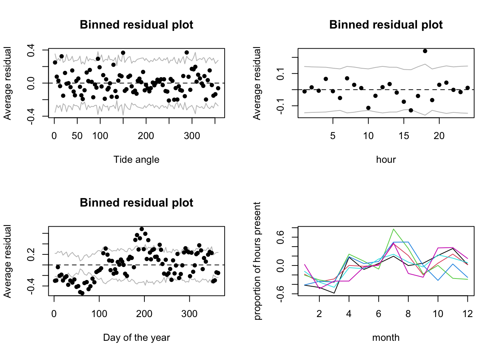
# more residual variation in diel pattern in later part of the year
# (not surprising as there is nothing in the model aiming at capturing this)
# residuals suggest that a finer binning of time of the year
# is required for the predictors. Or an approach that circumvents the issues
# with binning (see reference at the end for an alternative approach).
12. Assuming that the model is fine as it is, let’s plot the predictions with their confidence intervals for the probability of presence in relation to time of day, in both the May/June period and the rest of the year. For tide, assume it is fixed at a level of your choice, e.g. “1”.
- Suggested approach:
- create a
data.framecalledXcontaining the data to predict for. This can be done by hand following previous examples or using the functionexpand.gridfor creating all the combinations of the variables of interest:expand.grid(NameOfVar1 = levels(data$NameOfVar1), NameOfVar2= levels(data$NameOfVar2), NameOfVar3= "1")) - use
predict()with the appropriate options to obtain the fitted values on the link scale and for being able to calculate the confidence intervals later. Store in objectZ. - plot fitted values, extracted using
Z$fit, against the appropriate column of X (you can use different symbols or colours for groups). - in X, add columns for the fitted values and their confidence intervals, on the response scale (to be calculated).
- use the function
segmentsorarrowsto add confidence intervals to the fitted values (see the help page for the respective function).
- create a
The code is available below for you to unfold, if you don’t want to try yourself (you are always welcome to ask demonstrators for help).
PA12.dat4pred<- expand.grid(Time6= levels(dat$Time6),
Per2= levels(dat$Per2),
fTide4= "1")
PA12.pred<- predict(PA12, PA12.dat4pred, type= "link", se.fit= T)
PA12.dat4pred$fit.resp<- plogis(PA12.pred$fit)
# or exp(PA12.pred$fit)/(1+exp(PA12.pred$fit)) for the long version
# lower 95% CI
PA12.dat4pred$LCI<- plogis(PA12.pred$fit - 1.96*PA12.pred$se.fit)
# upper 95% CI
PA12.dat4pred$UCI<- plogis(PA12.pred$fit + 1.96*PA12.pred$se.fit)
par(mfrow= c(1, 1))
plot(as.numeric(PA12.dat4pred$Time6), PA12.dat4pred$fit.resp, pch= 16, cex= 1.4,
col= PA12.dat4pred$Per2, xlab= "Section of day",
ylab= "Fitted probability (assuming Tide = 1)", ylim= c(0, 1))
arrows(x0= as.numeric(PA12.dat4pred$Time6), x1= as.numeric(PA12.dat4pred$Time6),
y0= PA12.dat4pred$LCI, y1= PA12.dat4pred$UCI,
col= PA12.dat4pred$Per2, length= 0.02, angle= 90, code= 3)
legend(x= "topright", legend= c("RestOfYear", "MayJun"), col= c(1, 2), lty= 1, pch= 16)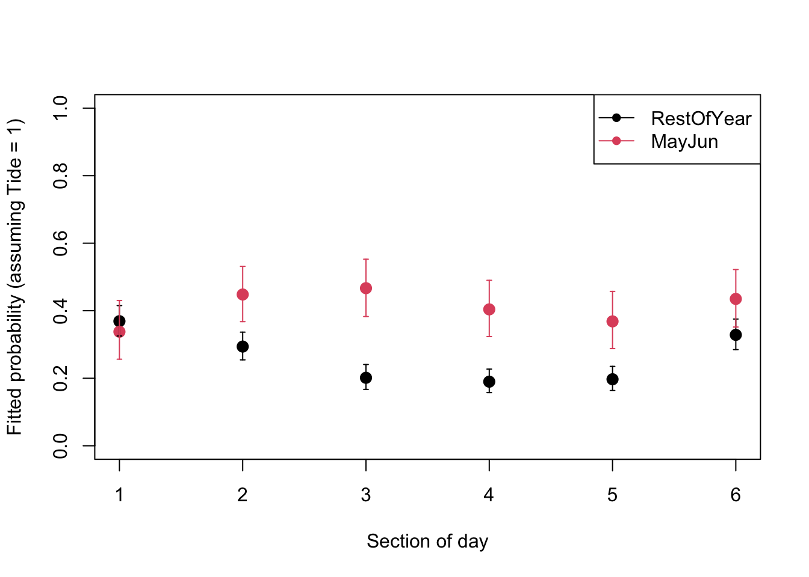
13. How satisfied are you with the model, and with all the assumptions being met? What have you learned from it, with respect to the initial aims of the study? Are there areas of improvement? Optional The publication here offers a different approach to analysing these data, using slightly fancier GLMs with smooth terms (called GAMs, for Generalized Additive Models), and a few additional refinements: [https://www.nature.com/articles/s41598-019-38900-4]. What assumptions differ between this and your approach?
# dolphins have a weak but apparently stable preference for certain tidal states in Sutors.
# According to model PA12, they are more likely to be seen during the day in
# May/June than in other months where they are more nocturnal
# There are few assumptions for the Bernoulli distribution other than
# observations being zeros and ones.
# Some assumptions valid for all models still apply here, such as: model
# correctly specified; independent
# residuals. The latter is violated in this data set due to consecutive
# measurements in time. This issue
# is explored in the linked paper, using mixed models for non-independent data
# The paper also uses GAMs for avoiding the discretization of
# continuous variables, and for
# accounting for the cyclicity of the preditors (estimates at each end should
# match, e.g. 31st Dec-1st Jan, or 23:59 - 00:00)
# Of note is the extremely low proportion of deviance explained by the model:
(PA12$null.deviance - PA12$deviance) /
PA12$null.deviance
## [1] 0.03207773
# 3%.
# Models for Bernoulli data rarely explain a large proportion of the deviance
# because Bernouilli data (0/1) are quite crude and thus, noisy.
# But 3% is particularly low, suggesting that the trends identified here are
# biologically weak ones albeit statistically significant.
End of the Binomial (Bernoulli) GLM - dolphin behavioural plasticity exercise
Optional questions, if you’re fast or want to take it further
A1. Repeat the model selection this time using AIC, with step(). Do you obtain the same minimal adequate model? Then replace Per2 by month mon (as a factor) for a finer seasonal resolution, and apply a model selection with step() again. Summarize the performance of the alternative models in a table. Is the same model structure preferred? Which of the Per2 or mon models is favoured by AIC? Do the residuals look better?
PA10.MAM.stepAIC<- step(PA10)
## Start: AIC=5606.86
## presence ~ fTide4 + Per2 + Time6 + fTide4:Per2 + fTide4:Time6 +
## Per2:Time6
##
## Df Deviance AIC
## - fTide4:Time6 15 5551.9 5587.9
## - fTide4:Per2 3 5543.5 5603.5
## <none> 5540.9 5606.9
## - Per2:Time6 5 5568.5 5624.5
##
## Step: AIC=5587.89
## presence ~ fTide4 + Per2 + Time6 + fTide4:Per2 + Per2:Time6
##
## Df Deviance AIC
## - fTide4:Per2 3 5554.8 5584.8
## <none> 5551.9 5587.9
## - Per2:Time6 5 5581.0 5607.0
##
## Step: AIC=5584.83
## presence ~ fTide4 + Per2 + Time6 + Per2:Time6
##
## Df Deviance AIC
## <none> 5554.8 5584.8
## - fTide4 3 5565.3 5589.3
## - Per2:Time6 5 5585.4 5605.4
anova(PA10.MAM.stepAIC, test= "Chisq")
## Analysis of Deviance Table
##
## Model: binomial, link: logit
##
## Response: presence
##
## Terms added sequentially (first to last)
##
##
## Df Deviance Resid. Df Resid. Dev Pr(>Chi)
## NULL 4999 5738.9
## fTide4 3 8.645 4996 5730.3 0.0344 *
## Per2 1 71.873 4995 5658.4 < 2.2e-16 ***
## Time6 5 73.013 4990 5585.4 2.416e-14 ***
## Per2:Time6 5 30.561 4985 5554.8 1.144e-05 ***
## ---
## Signif. codes: 0 '***' 0.001 '**' 0.01 '*' 0.05 '.' 0.1 ' ' 1
# same model as PA13
# convert 'mon' into factor
dat$fMonth<- factor(dat$mon)
# fit new model
PA20<- glm(presence ~ fTide4 + fMonth + Time6 + fTide4:fMonth + fTide4:Time6 +
fMonth:Time6, family= binomial, data= dat)
PA20.MAM.stepAIC<- step(PA20)
## Start: AIC=5343.08
## presence ~ fTide4 + fMonth + Time6 + fTide4:fMonth + fTide4:Time6 +
## fMonth:Time6
##
## Df Deviance AIC
## - fTide4:Time6 15 5110.6 5326.6
## - fTide4:fMonth 33 5148.2 5328.2
## <none> 5097.1 5343.1
## - fMonth:Time6 55 5269.7 5405.7
##
## Step: AIC=5326.56
## presence ~ fTide4 + fMonth + Time6 + fTide4:fMonth + fMonth:Time6
##
## Df Deviance AIC
## - fTide4:fMonth 33 5160.1 5310.1
## <none> 5110.6 5326.6
## - fMonth:Time6 55 5285.2 5391.2
##
## Step: AIC=5310.09
## presence ~ fTide4 + fMonth + Time6 + fMonth:Time6
##
## Df Deviance AIC
## <none> 5160.1 5310.1
## - fTide4 3 5171.4 5315.4
## - fMonth:Time6 55 5331.9 5371.9
anova(PA20.MAM.stepAIC, test= "Chisq")
## Analysis of Deviance Table
##
## Model: binomial, link: logit
##
## Response: presence
##
## Terms added sequentially (first to last)
##
##
## Df Deviance Resid. Df Resid. Dev Pr(>Chi)
## NULL 4999 5738.9
## fTide4 3 8.65 4996 5730.3 0.0344 *
## fMonth 11 318.55 4985 5411.7 < 2.2e-16 ***
## Time6 5 79.83 4980 5331.9 9.113e-16 ***
## fMonth:Time6 55 171.81 4925 5160.1 6.042e-14 ***
## ---
## Signif. codes: 0 '***' 0.001 '**' 0.01 '*' 0.05 '.' 0.1 ' ' 1
# Same structure selected: tide, plus season (month) by time of day
AIC(PA10.MAM.stepAIC)
## [1] 5584.829
AIC(PA20.MAM.stepAIC)
## [1] 5310.091
# Monthly model vastly favoured despite the 60 extra parameters
anova(PA10.MAM.stepAIC, PA20.MAM.stepAIC, test= "Chisq")
## Analysis of Deviance Table
##
## Model 1: presence ~ fTide4 + Per2 + Time6 + Per2:Time6
## Model 2: presence ~ fTide4 + fMonth + Time6 + fMonth:Time6
## Resid. Df Resid. Dev Df Deviance Pr(>Chi)
## 1 4985 5554.8
## 2 4925 5160.1 60 394.74 < 2.2e-16 ***
## ---
## Signif. codes: 0 '***' 0.001 '**' 0.01 '*' 0.05 '.' 0.1 ' ' 1
# also clearly favoured by likelihood ratio test
# constructing the AIC table by hand:
Model.formulas<- c("fTide4 + Per2 + Time6 + fTide4:Per2 + fTide4:Time6 + Per2:Time6",
"fTide4 + Per2 + Time6 + fTide4:Per2 + Per2:Time6",
"fTide4 + Per2 + Time6 + Per2:Time6",
"fTide4 + fMonth + Time6 + fTide4:fMonth + fTide4:Time6 + fMonth:Time6",
"fTide4 + fMonth + Time6 + fTide4:fMonth + fMonth:Time6",
"fTide4 + fMonth + Time6 + fMonth:Time6")
M.start<- glm(presence ~ fTide4 + Per2 + Time6 + fTide4:Per2 + fTide4:Time6 +
Per2:Time6, family= binomial, data= dat)
M.step2<- glm(presence ~ fTide4 + Per2 + Time6 + fTide4:Per2 + Per2:Time6,
family= binomial, data= dat)
M.step3<- glm(presence ~ fTide4 + Per2 + Time6 + Per2:Time6,
family= binomial, data= dat)
M.step4<- glm(presence ~ fTide4 + fMonth + Time6 + fTide4:fMonth + fTide4:Time6 +
fMonth:Time6, family= binomial, data= dat)
M.step5<- glm(presence ~ fTide4 + fMonth + Time6 + fTide4:fMonth +
fMonth:Time6, family= binomial, data= dat)
M.step6<- glm(presence ~ fTide4 + fMonth + Time6 + fMonth:Time6,
family= binomial, data= dat)
Model.AIC<- c(AIC(M.start),
AIC(M.step2),
AIC(M.step3),
AIC(M.step4),
AIC(M.step5),
AIC(M.step6))
summary.table<- data.frame(Model= Model.formulas,
AIC= round(Model.AIC, 2))
# Sorting models from lowest AIC (preferred) to highest (least preferred):
summary.table<- summary.table[order(summary.table$AIC), ]
# Adding AIC differences with respect to best model:
summary.table$deltaAIC<- summary.table$AIC - summary.table$AIC[1]
summary.table
## Model AIC deltaAIC
## 6 fTide4 + fMonth + Time6 + fMonth:Time6 5310.09 0.00
## 5 fTide4 + fMonth + Time6 + fTide4:fMonth + fMonth:Time6 5326.56 16.47
## 4 fTide4 + fMonth + Time6 + fTide4:fMonth + fTide4:Time6 + fMonth:Time6 5343.08 32.99
## 3 fTide4 + Per2 + Time6 + Per2:Time6 5584.83 274.74
## 2 fTide4 + Per2 + Time6 + fTide4:Per2 + Per2:Time6 5587.89 277.80
## 1 fTide4 + Per2 + Time6 + fTide4:Per2 + fTide4:Time6 + Per2:Time6 5606.86 296.77
# All the models including fMonth are preferred to any model that doesn't
# residual analysis:
res20.d<- resid(PA20.MAM.stepAIC, type= "pearson")
library(arm)
par(mfrow= c(2, 2))
binnedplot(x= dat$tideangle_deg, y= res20.d, xlab= "Tide angle", nclass= 100)
binnedplot(x= dat$mh, y= res20.d, xlab= "hour")
binnedplot(x= dat$julianday, y= res20.d, xlab= "Day of the year", nclass= 100)
# Check seasonal variation in diel pattern again ("time by season" interaction):
matplot(tapply( res20.d, list(dat$mon, dat$Time6), mean), type= "l",
xlab= "month",
ylab= "proportion of hours present", lty= 1)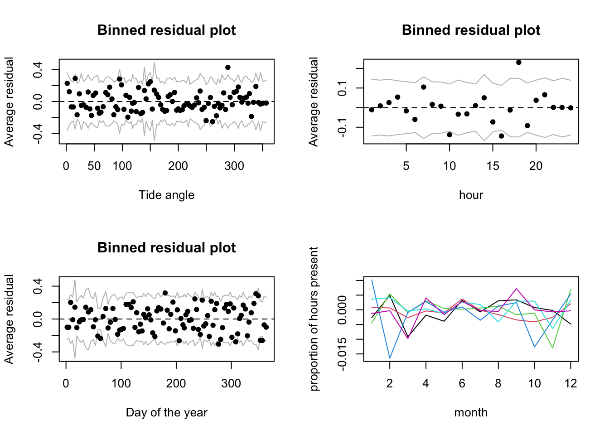
# much improved
# More detail on the variation of the daily pattern along the year
# could be obtained by plotting the predicted hour of day effect per month
# from PA20.MAM.stepAIC), like this:
par(mfrow= c(3, 4))
for(month in 1:12){
dat4pred<- expand.grid(Time6= levels(dat$Time6),
fMonth= as.character(month),
fTide4= "1")
PA20.pred<- predict(PA20.MAM.stepAIC, dat4pred, type= "link", se.fit= T)
dat4pred$fit.resp<- plogis(PA20.pred$fit)
dat4pred$LCI<- plogis(PA20.pred$fit - 1.96*PA20.pred$se.fit)
dat4pred$UCI<- plogis(PA20.pred$fit + 1.96*PA20.pred$se.fit)
plot(as.numeric(dat4pred$Time6), dat4pred$fit.resp, pch= 16,
cex= 1.4, main= paste("Month =", month),
col= 1, xlab= "Section of day",
ylab= "Fitted probability (assuming Tide = 1)", ylim= c(0, 1))
arrows(x0= as.numeric(dat4pred$Time6), x1= as.numeric(dat4pred$Time6),
y0= dat4pred$LCI, y1= dat4pred$UCI,
col= grey(0.5), length= 0.02, angle= 90, code= 3)
}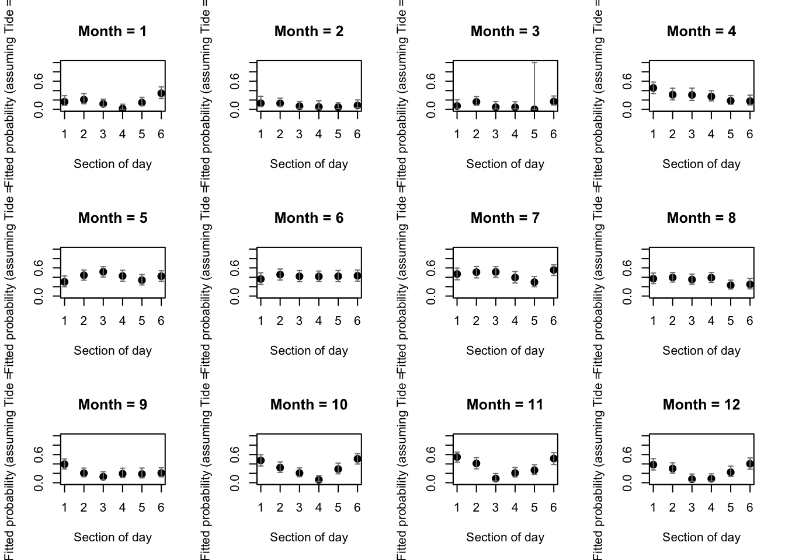
# According to this better supported model, they tend to use the site more
# in May, June and
# July day and night, visit mostly by night from October to December,
# and seldom from Jan to March.
# Of note is the low proportion of deviance explained by the model,
# despite its complexity (75 parameters):
(PA20.MAM.stepAIC$null.deviance - PA20.MAM.stepAIC$deviance) /
PA20.MAM.stepAIC$null.deviance
## [1] 0.1008604
# 10%. This is quite normal with Bernoulli data.
Appendix
Code for converting the original publicly available data (10 Mb) [https://datadryad.org/stash/dataset/doi:10.5061/dryad.k378542] into the ‘dolphin.csv’ file. Includes converting numeric variables into categories that you can define to suit your needs (binning), including making more bins if you wish. Binning is done easily using the cut() function. For example, creating 5 regular bins is done using cut(MyVector, breaks= 5). Note here that cut is used in a non-standard way to make the beginning and end of a cyclic variable belong to the same bin, which may be more biologically meaningful (you can decide, you are the expert!).
fulldat<- read.delim("./data/FineScale_Dataset_GAMM_OFB2019.txt")
str(fulldat)
dat<- fulldat[fulldat$site == "Sutors", c("presence", "year", "julianday", "tideangle_deg", "mh")]
dat$mon<- as.numeric(cut(dat$julianday, seq(1, 370, by= 30.5)))
dat$tideangle_deg<- round(dat$tideangle_deg)
# count number of data per year/month combination and represent as mosaicplot
plot(table(dat$year, dat$mon))
# remove 2016
dat<- dat[dat$year != 2016, ]
# Bin year into two periods (May+June vs rest of year)
dat$Per2<- cut(dat$julianday, breaks= c(-1, 120, 180, 400),
labels= c("RestOfYear", "MayJun", "RestOfYear"))
dat$Per2<- factor(dat$Per2, levels= c("RestOfYear", "MayJun"))
# (making "RestOfYear" the reference level)
# check this is working as intended:
plot(as.numeric(dat$Per2) ~ dat$julianday)
# Bin year into 4 periods:
# 3 periods of 20 days from early May to end of June vs rest of the year
dat$Per4<- cut(dat$julianday, breaks= c(0, 120, 140, 160, 180, 400),
labels= c("RestOfYear", "MayJun1", "MayJun2", "MayJun3", "RestOfYear"))
dat$Per4<- factor(dat$Per4, levels= c("RestOfYear", "MayJun1", "MayJun2", "MayJun3"))
# (reordering levels)
# check this is working as intended:
plot(as.numeric(dat$Per4) ~ dat$julianday)
# Bin time of day into 6 4h periods (first centered on midnight)
dat$Time6<- cut(dat$mh, breaks= c(-1, seq(2, 22, by= 4), 24),
labels= c("MNight", "AM1", "AM2", "MDay", "PM1", "PM2", "MNight"))
dat$Time6<- factor(dat$Time6, levels= c("MNight", "AM1", "AM2", "MDay", "PM1", "PM2"))
# reordering chronologically
# check this is working as intended:
table(dat$Time6, dat$mh)
# Bin tide angle into 4 quadrants with peaks in middle of respective bin
dat$Tide4<- cut(dat$tideangle_deg, breaks= c(-1, 45, 135, 225, 315, 360),
labels= c(1:4, 1))
# check this is working as intended:
plot(as.numeric(dat$Tide4) ~ dat$tideangle_deg)
# unless you desperately want to test the performance of your computer,
# play safe and reduce the size of the data set from 50000 to 5000:
set.seed(74) # makes the random sampling reproducible
# This means you will get the same random sample as the solutions to
# the exercises and the same results.
dat<- dat[sample(1:nrow(dat), size= 5000), ] # random subset or rows
write.csv(dat, "dolphin.csv")